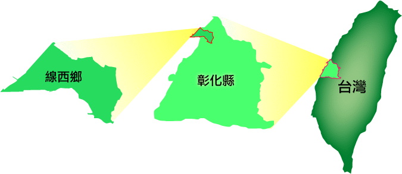

| 專題簡報… 相關資訊．計畫總覽．計畫要素．計畫貢獻度 |
我們參加的競賽類別是：地方企業組織 我們的「地方社區」是：線西鄉位於台灣彰化縣屬於「風頭水尾」地帶，西邊緊鄰台灣海峽，在彰濱工業區未開發前，快速道路以西曾是一望無際的海埔地，每逢海水漲潮，這片海埔地還會被海水淹沒，線西不管在鄉境面積或人口數，都居全縣之末，七成以上居民靠務農為生。 也因為地處偏僻靠海，土壤又不肥沃，東北季風又強勁，每年僅種植一期稻作，其它時期則轉種荸薺、大蒜或洋蔥等較耐寒的作物，所以居民也會以養蚵、養文蛤及出海捕魚來貼補家用，在一九六○年代初期，也有很多人以飼養鴨隻作副業，全盛期高達一百多萬隻，曾有「鴨蛋王國」稱號。但是近年來，農漁養殖業漸漸沒落，線西欲轉型為結合當地產業文化的觀光休閒鄉鎮…  我們的專題研究計劃概要：近年來，台灣的休閒風氣盛行，位於線西的林家馬場，也加入釀酒的事業，成立了白馬酒莊，更近一步結合畜牧、鹹蛋製作以及酒莊等地方產業，期待打造出一個結合在地產業文化的複合農場「白馬的家」，我們團隊主要研究這個不斷轉型中的在地產業，從目前農場的活動、物產到老闆創立的心路歷程，以及延伸到家鄉的農業問題，透過實地勘查走訪的方式，進行觀察及記錄第一手的資料。 我們的網際網路環境：我們學校是以100M光纖連上網際網路、而在家裡大多以ADSL連線。 我們所遭遇和克服的難題： (1)時間不足：我們在做網博的時候，遇到許多節日、校慶、段考…，使我們必須暫停，但我們利用午休時間和假日時間來彌補不足的時間，並以分工合作來完成整個專題。 (2)天候不佳：冬季天冷易下雨，出外參訪的日子，常下雨，或颳起風來，使我們無法參訪，但我們多去幾次，來補足天氣不佳的時候。 (3)經驗不足：我們有時在使用電腦軟體時，及製作報告時常遇到困難，但老師都會協助我們，解決問題。 心得箴言： |